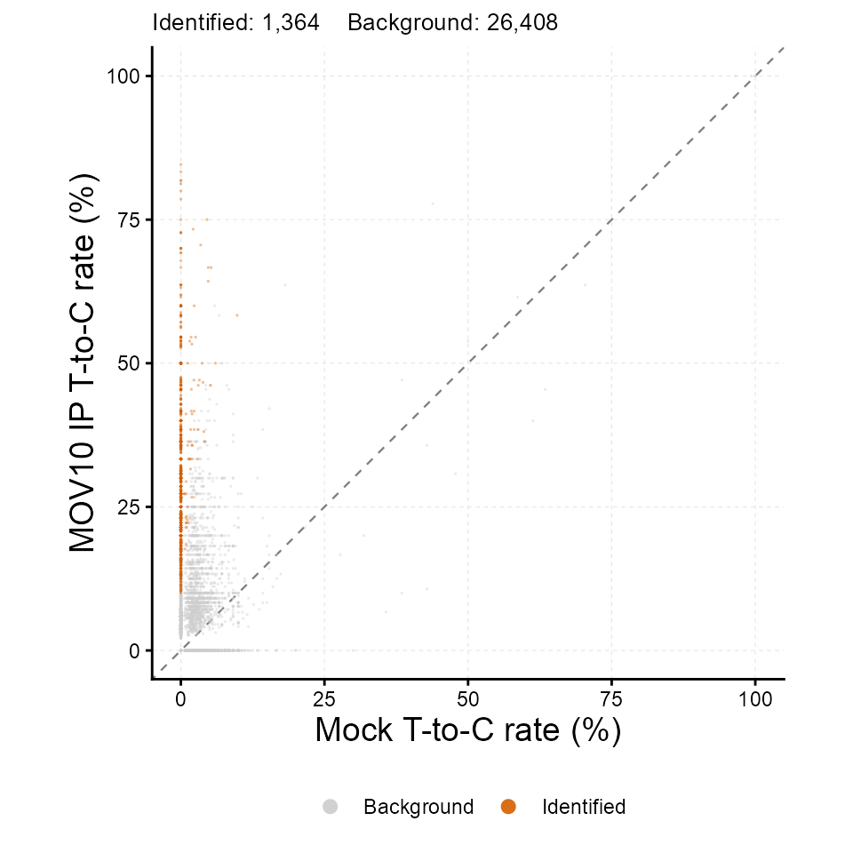
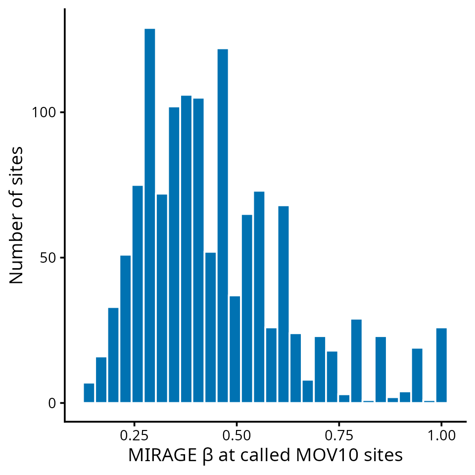

This tutorial shows how MIRAGE identifies protein–RNA crosslink sites from PAR-CLIP data. In PAR-CLIP, 4-thiouridine is incorporated into nascent RNA and UV crosslinking to the bound protein causes a diagnostic T-to-C transition at the crosslinked uridine during reverse transcription. Every uridine covered by immunoprecipitated reads is a candidate site; the matched control is a mock or input library.
| MIRAGE parameter | meaning in PAR-CLIP |
|---|---|
beta_est (β) |
fraction of molecules crosslinked at the site, i.e. a background-corrected binding score |
lambda1 (γ₁) |
T-to-C conversion rate at a crosslinked uridine |
lambda2 (γ₂) |
background T-to-C rate at non-crosslinked uridines |
kappa_est (κ) |
reference-allele fraction, so that heterozygous T/C variants are not called as crosslinks |
The Example Data
The package ships a chromosome 21 and 22 subset of a MOV10 PAR-CLIP
count table (wild-type MOV10 immunoprecipitation versus a mock control;
GEO GSE48245) so that the tutorial runs in seconds. Each row is one
uridine with T (fixed) and total counts in both
libraries.
count_table <- read.delim(
system.file("extdata", "parclip_mov10_chr21_chr22_counts.tsv", package = "MIRAGE")
)
nrow(count_table)
#> [1] 27772
head(count_table, 5)
#> pos motif type treated_fixed_count treated_depth
#> 1 chr21_5116494_- UCUCU NNUNN 9 10
#> 2 chr21_5116734_- UUUGC NNUNN 3 11
#> 3 chr21_5116735_- GUUUG NNUNN 11 11
#> 4 chr21_5116736_- GGUUU NNUNN 11 11
#> 5 chr21_5116740_- UUUAG NNUNN 14 15
#> control_fixed_count control_depth
#> 1 11 11
#> 2 35 35
#> 3 35 35
#> 4 34 35
#> 5 38 38pos is
<chrom>_<coordinate>_<strand>,
motif is the 5-mer around the uridine, and
type marks the target base class (NNUNN). The
full, genome-wide table has the same columns.
Infer Crosslink Sites With MIRAGE
library(MIRAGE)
#> Loading required package: doParallel
#> Loading required package: foreach
#> Loading required package: iterators
#> Loading required package: parallel
#> Loading required package: dplyr
#>
#> Attaching package: 'dplyr'
#> The following objects are masked from 'package:stats':
#>
#> filter, lag
#> The following objects are masked from 'package:base':
#>
#> intersect, setdiff, setequal, union
parclip_res <- estimate_inference_with_empirical(
chr.info = count_table[, c("pos", "motif", "type")],
treatment_fixed_count = count_table$treated_fixed_count,
control_fixed_count = count_table$control_fixed_count,
treatment_depth = count_table$treated_depth,
control_depth = count_table$control_depth,
delta = 0.001,
depth.cutoff = 10,
homo.cutoff = 0.99,
lambda1 = "auto",
bg.method = "lrt",
bg.target = "both",
highly.methyl.cutoff = 0.95,
seed = 123,
thread = tutorial_threads
)
#> Considering 25375 (91.37%) sites as homozygous...
#> Hyper-thread registered: TRUE
#> Using 2 threads to make homo initial test...
#> Considering 19101 (75.27%) sites as background (homozygous sites only)...
#> Hyper-thread registered: TRUE
#> Using 2 threads to make homo final test...
#> Considering 1320 (5.2%) sites as high-signal site candidates (homozygous sites only)...
#> Hyper-thread registered: TRUE
#> Using 2 threads to make homo beta estimation...
#> Hyper-thread registered: TRUE
#> Using 2 threads to make heter beta estimation...
data.frame(
n_homosites = nrow(parclip_res$homosites),
n_hetersites = nrow(parclip_res$hetersites),
lambda1 = parclip_res$lambda1,
lambda2 = parclip_res$lambda2
)
#> n_homosites n_hetersites lambda1 lambda2
#> 1 25375 2397 0.627911 0.01357644bg.target = "both" uses the treatment and control counts
together to estimate the background T-to-C rate, which suits PAR-CLIP
where the mock library is itself sparse at many positions.
Inspect And Call Sites
A crosslink site call combines the likelihood-ratio FDR with a
minimum β. Sites in hetersites carry a
kappa_est estimate; a genuine T/C variant appears there
with high control conversion and low β.
homo <- parclip_res$homosites
called <- homo[homo$lrt_fdr < 0.05 & homo$beta_est >= 0.1, ]
nrow(called)
#> [1] 1320
head(
called[order(called$lrt_fdr),
c("pos", "motif", "treatment_fixed_rate", "control_fixed_rate", "beta_est", "lrt_fdr")],
8
)
#> pos motif treatment_fixed_rate control_fixed_rate beta_est
#> 699 chr21_25881309_- AGUCC 0.2727273 1 1.0000000
#> 8900 chr22_20952754_+ CGUAC 0.1538462 1 1.0000000
#> 23533 chr22_39521939_+ AAUAA 0.4705882 1 0.8391858
#> 7342 chr22_18089498_+ UGUGC 0.3214286 1 1.0000000
#> 12800 chr22_28795044_- UGUUC 0.6060606 1 0.6183725
#> 17519 chr22_35295100_+ UCUGC 0.2500000 1 1.0000000
#> 18413 chr22_35741544_- CUUGC 0.4193548 1 0.9226937
#> 20583 chr22_38291218_- CAUCC 0.3636364 1 1.0000000
#> lrt_fdr
#> 699 1.696124e-12
#> 8900 1.696124e-12
#> 23533 7.206994e-08
#> 7342 1.526720e-06
#> 12800 1.526720e-06
#> 17519 2.308107e-06
#> 18413 3.595691e-06
#> 20583 3.993032e-06
head(
parclip_res$hetersites[
order(parclip_res$hetersites$control_fixed_rate),
c("pos", "treatment_fixed_rate", "control_fixed_rate", "beta_est", "kappa_est", "lrt_fdr")
],
4
)
#> pos treatment_fixed_rate control_fixed_rate beta_est
#> 4014 chr21_41987559_- 0.0000 0 1
#> 4207 chr21_41988460_- 0.0000 0 1
#> 13484 chr22_30332367_- 0.0000 0 1
#> 20472 chr22_37947136_+ 0.0625 0 0
#> kappa_est lrt_fdr
#> 4014 0.00000 1.0000000
#> 4207 0.00000 1.0000000
#> 13484 0.00000 1.0000000
#> 20472 0.03705 0.6818792Save the results:
out_dir <- file.path(tempdir(), "mirage_parclip_output")
dir.create(out_dir, showWarnings = FALSE)
saveRDS(parclip_res, file.path(out_dir, "mirage_result.rds"))
write.table(called, file.path(out_dir, "mov10_crosslink_sites.tsv"),
sep = "\t", quote = FALSE, row.names = FALSE)
list.files(out_dir)
#> [1] "mirage_result.rds" "mov10_crosslink_sites.tsv"Diagnostic Scatter
plot_signal_scatter(
parclip_res,
color_by = "significance", fdr_col = "lrt_fdr", fdr_cutoff = 0.05,
xlab = "Mock T-to-C rate (%)", ylab = "MOV10 IP T-to-C rate (%)"
)
Distribution Of Binding Scores
The distribution of β at called sites summarizes crosslinking strength; a BED-like export makes the sites available to genome browsers and annotation tools.
library(ggplot2)
ggplot(called, aes(x = beta_est)) +
geom_histogram(bins = 30, fill = "#0072B2", colour = "white") +
labs(x = "MIRAGE β at called MOV10 sites", y = "Number of sites") +
theme_classic(base_size = 14)
parts <- do.call(rbind, strsplit(called$pos, "_"))
bed <- data.frame(
chrom = parts[, 1],
start = as.integer(parts[, 2]) - 1L,
end = as.integer(parts[, 2]),
name = called$pos,
score = round(called$beta_est, 4),
strand = parts[, 3]
)
head(bed, 4)
#> chrom start end name score strand
#> 1 chr21 5116733 5116734 chr21_5116734_- 1.0000 -
#> 2 chr21 14371317 14371318 chr21_14371318_- 0.8653 -
#> 3 chr21 14371625 14371626 chr21_14371626_- 0.7524 -
#> 4 chr21 14371737 14371738 chr21_14371738_- 0.6283 -
write.table(bed, file.path(out_dir, "mov10_crosslink_sites.bed"),
sep = "\t", quote = FALSE, row.names = FALSE, col.names = FALSE)Adapting To Your Own PAR-CLIP Data
- Align IP and control reads, then pile up T and C counts at every covered uridine (on the transcribed strand). Any pileup tool that reports per-base counts is sufficient.
- Build the seven-column table;
motifandtypecan be placeholders. - Run on the genome-wide table (tens of minutes for ~1 million uridines with several threads); β and the FDR columns are then used to call and rank sites.
Session Information
sessionInfo()
#> R version 4.5.3 (2026-03-11)
#> Platform: x86_64-conda-linux-gnu
#> Running under: Ubuntu 24.04.4 LTS
#>
#> Matrix products: default
#> BLAS/LAPACK: /home/yangli/software/micromamba/envs/mirage-r/lib/libopenblasp-r0.3.34.so; LAPACK version 3.12.0
#>
#> locale:
#> [1] LC_CTYPE=C.UTF-8 LC_NUMERIC=C LC_TIME=C.UTF-8
#> [4] LC_COLLATE=C.UTF-8 LC_MONETARY=C.UTF-8 LC_MESSAGES=C.UTF-8
#> [7] LC_PAPER=C.UTF-8 LC_NAME=C LC_ADDRESS=C
#> [10] LC_TELEPHONE=C LC_MEASUREMENT=C.UTF-8 LC_IDENTIFICATION=C
#>
#> time zone: America/Chicago
#> tzcode source: system (glibc)
#>
#> attached base packages:
#> [1] parallel stats graphics grDevices utils datasets methods
#> [8] base
#>
#> other attached packages:
#> [1] ggplot2_4.0.3 MIRAGE_0.6.0 dplyr_1.2.1 doParallel_1.0.17
#> [5] iterators_1.0.14 foreach_1.5.2
#>
#> loaded via a namespace (and not attached):
#> [1] gtable_0.3.6 jsonlite_2.0.0 compiler_4.5.3 tidyselect_1.2.1
#> [5] jquerylib_0.1.4 scales_1.4.0 systemfonts_1.3.2 textshaping_1.0.5
#> [9] yaml_2.3.12 fastmap_1.2.0 R6_2.6.1 labeling_0.4.3
#> [13] generics_0.1.4 knitr_1.51 htmlwidgets_1.6.4 tibble_3.3.1
#> [17] desc_1.4.3 RColorBrewer_1.1-3 bslib_0.12.0 pillar_1.11.1
#> [21] rlang_1.3.0 cachem_1.1.0 xfun_0.60 S7_0.2.2
#> [25] fs_2.1.0 sass_0.4.10 otel_0.2.0 cli_3.6.6
#> [29] withr_3.0.3 pkgdown_2.2.1 magrittr_2.0.5 digest_0.6.39
#> [33] grid_4.5.3 lifecycle_1.0.5 vctrs_0.7.3 evaluate_1.0.5
#> [37] glue_1.8.1 farver_2.1.2 codetools_0.2-20 ragg_1.5.2
#> [41] rmarkdown_2.31 tools_4.5.3 pkgconfig_2.0.3 htmltools_0.5.9